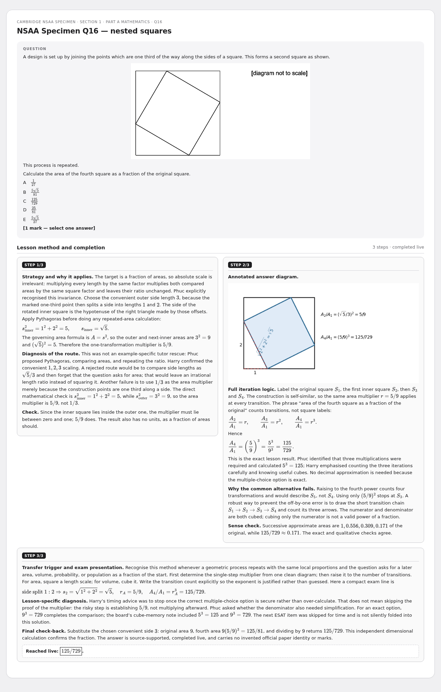
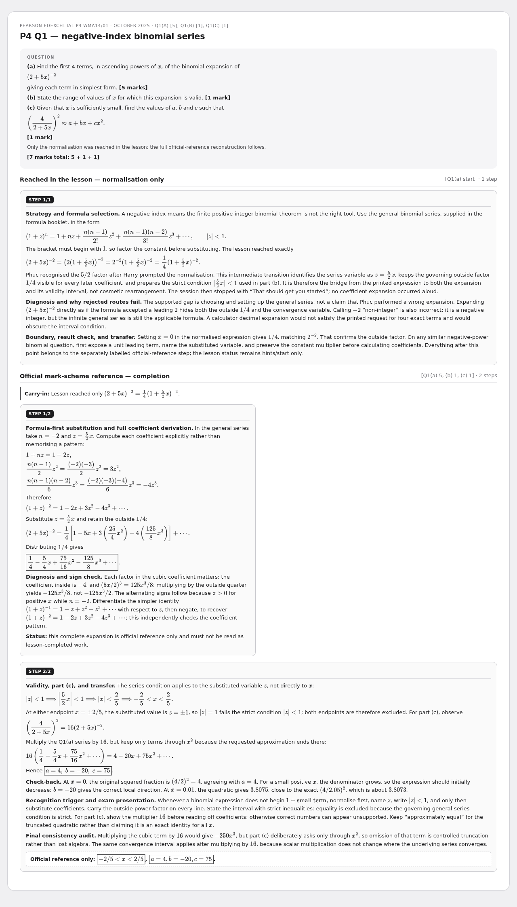
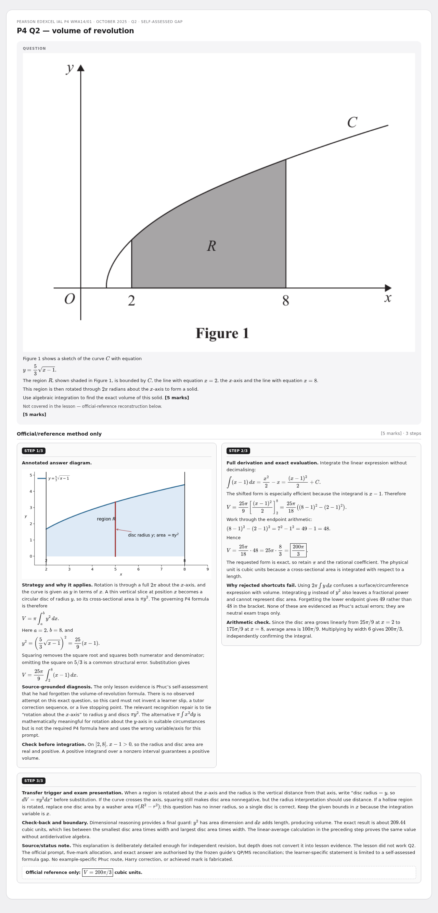
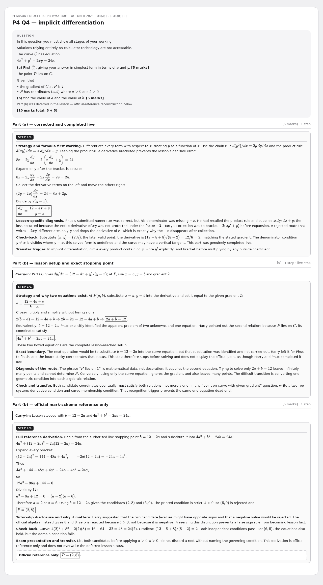
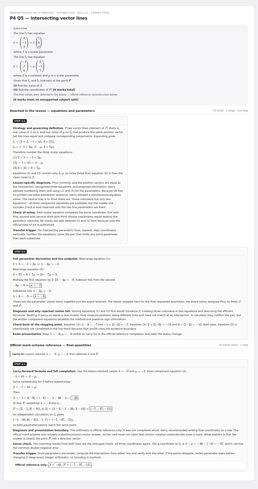
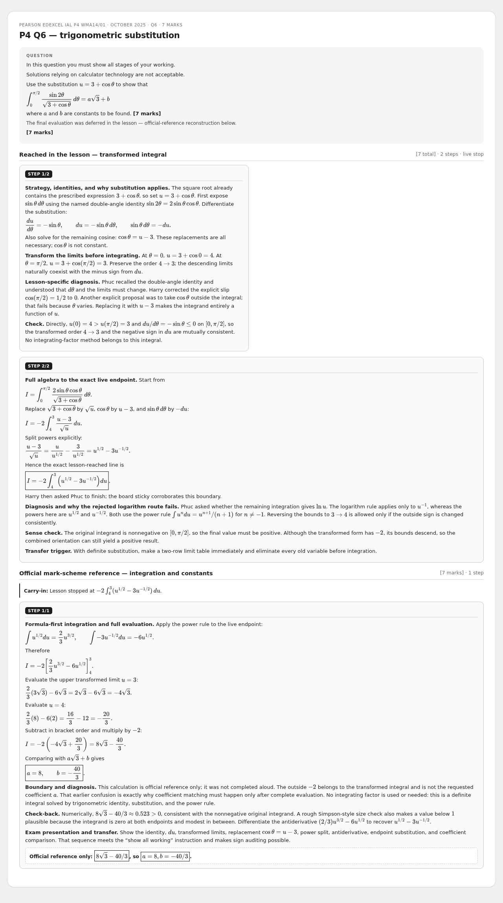
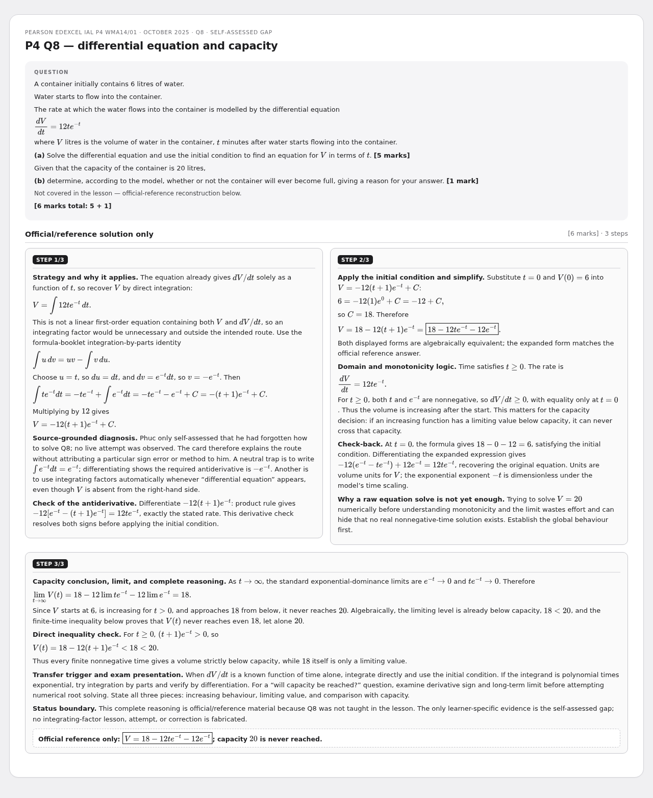

26 June - P4 (WMA14/01) + NSAA
Rebuilt multi-step cards - review preview. Not part of the live deck.
7 cardsWMA14/01P4NSAA
NSAA Specimen Q16 — nested squares
Cambridge NSAA Specimen · Section 1 · Part A Mathematics · Q16

P4 Q1 — negative-index binomial series
Pearson Edexcel IAL P4 WMA14/01 · October 2025 · Q1(a) [5], Q1(b) [1], Q1(c) [1]

P4 Q2 — volume of revolution
Pearson Edexcel IAL P4 WMA14/01 · October 2025 · Q2 · self-assessed gap

P4 Q4 — implicit differentiation
Pearson Edexcel IAL P4 WMA14/01 · October 2025 · Q4(a) [5], Q4(b) [5]

P4 Q5 — intersecting vector lines
Pearson Edexcel IAL P4 WMA14/01 · October 2025 · Q5(i)–(ii) · 6 marks total

P4 Q6 — trigonometric substitution
Pearson Edexcel IAL P4 WMA14/01 · October 2025 · Q6 · 7 marks

P4 Q8 — differential equation and capacity
Pearson Edexcel IAL P4 WMA14/01 · October 2025 · Q8 · self-assessed gap
